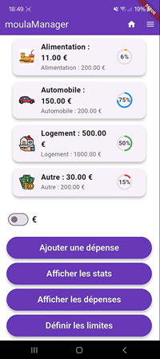

MoulaManager - Appli mobile de gestion de finances
Projet réalisé en binôme • Cadre académique
Contexte : Application mobile conçue pour aider un utilisateur à suivre et organiser ses dépenses quotidiennes.
Objectif : Permettre une meilleure gestion du budget personnel grâce à un suivi clair des revenus et des dépenses.
Défi technique : Conception d’une interface mobile intuitive et structuration des données financières de manière fiable.
Résultat : Une application simple d’utilisation permettant de visualiser ses dépenses et d’améliorer sa gestion financière.
Compétences appliquées :